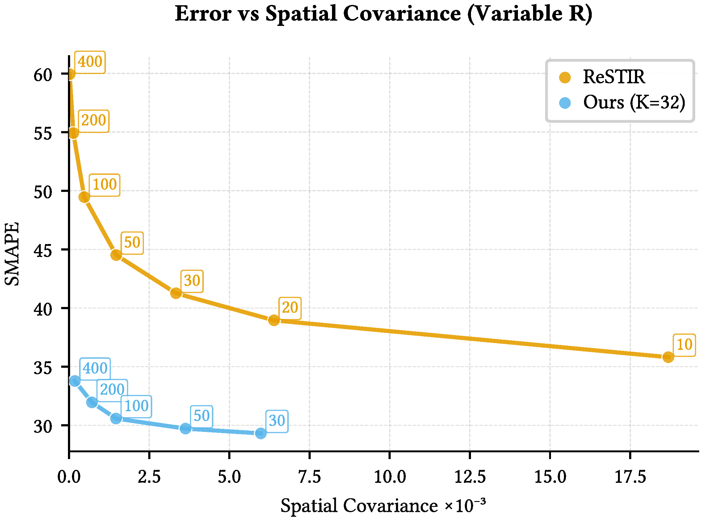

Reservoir-based spatiotemporal importance resampling (ReSTIR) improves convergence of real-time Monte Carlo rendering by reusing samples between pixels and frames. Recent reservoir splatting and area ReSTIR methods improve ReSTIR's temporal robustness in challenging scenes, but much less work focuses on improving spatial reuse.
We present a novel neighbor selection algorithm for ReSTIR's spatial reuse. Our simple method works with any pixel-space ReSTIR technique to improve image quality; we reduce SMAPE by 6–29% while also decreasing temporal covariance by 22–49%, all with a 2–5% incremental cost.
We ground our work in an analysis of path compatibility between pixels and an empirical evaluation of the fundamental error–correlation tradeoff in ReSTIR; we improve the Pareto frontier of this tradeoff and provide tunable control over the balance between variance and correlation.
There is a fundamental tradeoff between image error and covariance in ReSTIR: changing the reuse radius allows trading covariance for error, but reducing both simultaneously requires an algorithmic improvement. Our compatibility-guided neighbor selection improves the Pareto frontier of this tradeoff.

We perform a multi-tap spatial neighbor search, evaluating a continuous-valued compatibility heuristic at K candidate pixels and resampling M neighbors proportional to their score using weighted reservoir sampling. The heuristic combines a world-space position term and a surface normal term, both computed from G-buffer attributes, preserving GRIS's unbiasedness. Our selection is a drop-in replacement compatible with ReSTIR DI, GI, and PT.
We consistently improve both noise and temporal covariance across scenes with only a small increase in cost. In Emerald Square, where geometric complexity makes neighbor selection especially important, we reduce SMAPE by 29% and temporal covariance by 49%. In simpler scenes, reductions are 6–14% in SMAPE and 22–31% in temporal covariance, all with 2–5% total runtime overhead.
@inproceedings{junkins2026cgns,
author = {Junkins, Orion and Kettunen, Markus and Lin, Daqi and Ramamoorthi, Ravi and Wyman, Chris},
title = {Compatibility-Guided Neighbor Selection for {ReSTIR}},
booktitle = {High Performance Graphics (HPG)},
year = {2026},
doi = {10.1145/3820024},
}